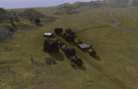

Spring 1944
Dieser Artikel wurde für die folgenden Ubuntu-Versionen getestet:
Ubuntu 16.04 Xenial Xerus
Zum Verständnis dieses Artikels sind folgende Seiten hilfreich:
Spring 1944  ist ein im 2. Weltkrieg angesiedeltes Echtzeitstrategiespiel auf Basis der Spring Engine. Das Ziel dieses Spiels ist es, vier voll funktionierende Teams mit ihren eigenen individuellen Stärken und Schwächen nach ihren realen Vorbildern zu kreieren. Dazu zählen hauptsächlich die USA, Deutschland, die UdSSR und Großbritannien, aber auch andere Fraktionen wie Italien, Japan oder Finnland. Realismus war und ist ein primäres Designziel, dennoch soll ein Spiel geschaffen werden, das Spaß macht und vor allem für jeden zugänglich ist. Konstante Verbesserungen lassen das Herz eines jeden Vollblut-Strategen höher schlagen.
ist ein im 2. Weltkrieg angesiedeltes Echtzeitstrategiespiel auf Basis der Spring Engine. Das Ziel dieses Spiels ist es, vier voll funktionierende Teams mit ihren eigenen individuellen Stärken und Schwächen nach ihren realen Vorbildern zu kreieren. Dazu zählen hauptsächlich die USA, Deutschland, die UdSSR und Großbritannien, aber auch andere Fraktionen wie Italien, Japan oder Finnland. Realismus war und ist ein primäres Designziel, dennoch soll ein Spiel geschaffen werden, das Spaß macht und vor allem für jeden zugänglich ist. Konstante Verbesserungen lassen das Herz eines jeden Vollblut-Strategen höher schlagen.
Installation¶
Um Spring 1944 unter Ubuntu installieren zu können, muss man als Erstes die Spiele-Engine Spring und die Lobby installieren [1]. Weiteres dazu findet man im Wikiartikel Installation der Spring Engine. Dennoch wird in den Ubuntu-Paketquellen die Spring Engine und Lobby mitgeliefert. Wer das nicht möchte und nur das Spiel installieren will, weil die Engine und Lobby schon installiert sind, kann alternativ die .sdz-Datei von der Homepage herunterladen und mittels des in der Spring-Engine mitgelieferten Archiv-Managers installieren.
Paketquelle¶
Adresszeile zum Hinzufügen des PPAs:
ppa:s44/stable
Hinweis!
Zusätzliche Fremdquellen können das System gefährden.
Ein PPA unterstützt nicht zwangsläufig alle Ubuntu-Versionen. Weitere Informationen sind der  PPA-Beschreibung des Eigentümers/Teams s44 zu entnehmen.
PPA-Beschreibung des Eigentümers/Teams s44 zu entnehmen.
Damit Pakete aus dem PPA genutzt werden können, müssen die Paketquellen neu eingelesen werden.
Nach dem Aktualisieren der Paketquellen können die folgenden Pakete installiert werden [2]:
spring1944 (ppa)
spring1944-maps (ppa)
 mit apturl
mit apturl
Paketliste zum Kopieren:
sudo apt-get install spring1944 spring1944-maps
sudo aptitude install spring1944 spring1944-maps
Nach der Installation findet man das Spiel bei Ubuntu-Varianten mit einem Anwendungsmenü unter "Spiele -> Springlobby".
Einführung¶
Das Spiel füllt sich stetig mit immer neuen Funktionen und 3D-Objekten, die Einfluss auf den Spielverlauf nehmen können. Informationen zu Updates und andere Änderungen ("Test builds") findet man im S44-Channel der Springlobby. In der Lobby ist auch ein Changelog als Link hinterlegt. Durch Starten der Lobby betritt man automatisch den Spring1944-IRC-Channel. Sollte man nur das Spiel installieren, da die Lobby schon installiert ist, kann man mit Hilfe des folgenden Befehls den Channel manuell betreten:
/join #s44
Der Befehl kann ganz simpel im IRC-Chat eingegeben werden.
Spiel starten¶
Man kann unter dem Menüpunkt "Singleplayer" ein eigenes Spiel gegen Bots hosten oder aber im Menüpunkt "Multiplayer" gegen menschliche Spieler antreten. Beim Singleplayer ist lediglich zu beachten, als Gegner C.R.A.I.G einzustellen, da dieser Computergegner für diese Spiel entworfen wurde. Des Weiteren lassen sich dort noch weitere Werte einstellen, z.B. Schwierigkeitsgrad, Ressourcen beim Spielbeginn und noch viel mehr. Die Anzahl der Bots kann beliebig gewählt werden.
In-Game¶
Die grundsätzliche Spielmechanik ist mit den RTS-Mechaniken vieler bekannter Titel aus diesem Genre vergleichbar. Jede Fraktion startet mit eigenen individuellen Gebäuden und Fähigkeiten, welche jeweils fraktionsbasierende Vor- und Nachteile nach ihren realen Vorbildern mitbringen. Das überträgt sich auch auf die zur Verfügung stehenden Einheiten wie Soldaten, Panzer, Flugzeuge, Schiffe und U-Boote.
Jede Fraktion verfügt zu Beginn über einen Ingenieur, diverse Verteidigungskräfte gegen Boden- und Lufteinheiten sowie ein Hauptquartier und ein Munitionslager. Das Hauptquartier kann mit einigen grundlegenden Funktionen dienen, so lassen sich schon vom Hauptquartier aus Spähflugzeuge und Infanteristen ordern. Je nach Strategie empfiehlt es sich, Baracken zu bauen, um potente Bodentruppen auszubilden. Diese sind wichtig, um Fahnen zu besetzen. Wenn noch keine Baracken vorhanden sind, sollte man zum Anfang des Spiels auf die Infanterie des Hauptquartiers zurückgreifen. Diese sollten allerdings nicht als langfristige Lösung herhalten, da diese gegen professionelle Einheiten nur verheizt werden würden. Die Infanterie in den Baracken ist deutlich besser trainiert, des Weiteren ist die spezialisierte Auswahl größer.
Um Fahrzeuge zu bauen, bietet es sich an, eine leichte Fahrzeugfabrik zu bauen. Hier können Spähfahrzeuge, Baufahrzeuge, aber auch Fahrzeuge zur Bekämpfung gegnerischer Einheiten gebaut werden. Das Erweitern dieser Fabrik schaltet Fahrzeuge zur Bekämpfung weicherer Ziele frei, also beispielsweise Truppentransporter, Jeeps oder ähnliches.
Eine Panzerfabrik ermöglicht den Bau von schweren Gerät, um neben weichen auch gepanzerte Ziele zu bekämpfen. Besonders nennenswert sind hierbei der Sherman Firefly, Jumbo, JS2, KV2, Tiger I, Tiger II und Panther. Wichtig ist, Fahrzeuge nicht alleine in ein Gefecht zu schicken. Panzer und andere Fahrzeuge sind oft relativ blind und leichte Beute für Panzerjäger. Es empfiehlt sich also generell, einen Waffenverbund aus Infanterie, Truppentransportern und Panzern aufzustellen.
Stationierbare Geschütze und schwere Artillerie kann mithilfe der Artilleriefabrik gebaut werden. Gerade diese Waffen verschlingen viele Ressourcen, besitzen aber enorme Reichweiten und können in den feindlichen Verteidigungslinien großen Schaden anrichten. Besonders gut einsetzbar sind diese Waffen bei einem defensiven Gegner. Dabei ist es von Vorteil, Sichtkontakt mithilfe von Spähtruppen herzustellen, um eine nahezu hundertprozentige Zielgenauigkeit zu erreichen. Um mehr Bewegung in die normalerweise sehr trägen Batterien zu bekommen, lassen sich auch mobile Artillerien wie die "Wespe" bauen. Ein Erweitern dieser Anlage ist dazu notwendig. Flug- und Panzerabwehrwaffen können hier ebenfalls gebaut werden.
Flugzeuge lassen sich mithilfe eines Radarsystems, z.B. mit "Freya", in die Kampfzone schicken. Des Weiteren warnt ein Radar den Spieler vor gegnerischen Flugzeugen. Flugzeuge fliegen von außerhalb der Karte ins Kampfgeschehen. Es gibt Bomber, Jagdflugzeuge, Abfangflugzeuge, Aufklärungsflugzeuge, Fallschirmjäger und mehr.
Ressourcen¶
Munition wird in Abhängigkeit der Zeit aufgefüllt: Je weiter man die Logistik ausbaut, je mehr Munition kann nach Ablauf einer bestimmten Zeit aufgefüllt werden. Die Zeit lässt sich vor dem Start eines jeden Spiels anpassen, liegt aber grundsätzlich immer bei sieben Minuten. Die Munitionsbestände sind ausschlaggebend, um die eigenen Truppen zu versorgen und gegnerische Boden-, Luft- oder Wassereinheiten zu bekämpfen. Daher empfiehlt es sich je nach Wahl der Strategie, während des Spielverlaufs die Bestände durch das Bauen weiterer "Supplydepots" zu erweitern. Der Versorgungsradius kann mit speziellen "Largesupplydepot" ausgeweitet werden. Es gibt auch mobile Einheiten mit einem relativ kleinen Versorgungsradius.
Der nächste wichtige Faktor ist das Einnehmen von Fahnen, diese Fahnen geben dem Spieler Kommandopunkte. Man kann Kommandopunkte mit Geld gleichsetzen. Auf den Original-S44-Karten sind diese Fahnen an strategisch wichtigen Punkten platziert. Auf den regulären Karten anderer Spring Engine-Spiele werden die jeweiligen Rohstoffe einfach in CP-Fahnen umgewandelt, es sind also alle für die Spring Engine verfügbaren Karten kompatibel. Wie viele Kommandopunkte dem Spieler gutgeschrieben werden, hängt von den Einstellungen und der Karte ab. Besonders beim Bau teurer Einheiten sollte man die Kommandopunkte im Auge behalten. Der Kostenunterschied zwischen Panzern und Sturmgeschützen ist ein nicht zu verachtender Faktor.
Merkmale der Hauptfraktionen¶
Zu den Hauptfraktionen des Spiels kann man folgende spezielle Merkmale ergänzen:
Großbritannien: Das Vereinigte Königreich besitzt eine sehr starke Infanterie. Die Briten können Fahnen sehr schnell einnehmen und sind im Nahkampf sehr mächtig. Der Fuhrpark der Engländer ist sehr solide: Es ist alles da, was nötig ist, um allen Fahrzeugtypen Parole zu bieten. Besonders gut ist auch die Luftüberlegenheit. Aber alles hat seinen Preis, viele Kommandopunkte werden vorausgesetzt.
Deutschland: Die deutsche Fraktion ist eine sehr ausgewogene Fraktion, die Infanterie ist überdurchschnittlich gut trainiert und kann sehr schnell Fahnen besetzen. Der Fuhrpark lässt sich als der mächtigste beschreiben. Es gibt leichte, mittlere und schwere Fahrzeuge. Die Luftüberlegenheit ist durchschnittlich, es ist aber alles vorhanden, um die Luftüberlegenheit zu erlangen. Teuer sind vor allem die schweren Panzer oder spezialisierte Einheiten und die eher seltenen, aber modernen Waffen wie die V1. Infanterie kostet auch viele Kommandopunkte.
USA: Die amerikanische Fraktion kann im Allgemeinen als durchschnittlich betrachtet werden, die Infanterie benötigt doch schon länger, um eine Fahne zu besetzen. Herausragend sind die Fallschirmjäger, aber auch die Luft-Boden-Fähigkeiten der Air Force. Der Fuhrpark ist mittelmäßig: der Sherman mit seiner kleinen 75mm-Kanone ist nur für die Bekämpfung von Infanterie gedacht gewesen. Erst eine erweiterte Version mit langer 76mm-Kanone kann Panzer potent bekämpfen. Dafür sind Einheiten günstig in der Produktion und Waffenverbände lassen sich schon sehr schnell realisieren.
UDSSR: Die Sowjetunion ist eine Fraktion, die sehr stark auf Quantität ausgelegt ist. Dabei können Massen an Infanteristen den Gegner in die Knie zwingen. Angriffe aus dem Hinterhalt sind keine Seltenheit. Die Sowjetunion besitzt aber auch große Kaliber, der JS2 mit seiner 120mm-Kanone hat eine enorme Feuerkraft. Die Luftüberlegenheit hält sich stark in Grenzen, aber auch hier kann auf Masse gesetzt werden. Waffenverbände sind sehr schnell und günstig aufgestellt, leider fehlt es den meisten Einheiten an Präzision und Professionalität.
In-Game-Bilder¶
| Schützende Einheiten am Start |
| Der Ingenieur |
| Gebäude bauen |
| Repeatfunktion/Hauptquartier |
| Bauen mit mehreren Ingenieuren |
| Ressourcen und UI |
Sonstige Screenshots¶
| Natur |
| Ost-Feldzug |
|  |
| Road to Rome - Weg nach Rom |
| BF109 |
| Unterschiedlich schwere Artillerie |
| Panzer IV und Stug III |
Tipps und Informationen¶
Jede im Spiel vorkommende Fraktion hat individuelle Stärken und Schwächen, welche dem damaligen Stand der Dinge nachempfunden sind. Dies beinhaltet z.B. das verfügbare Kontingent an Truppen und auch den Stand der jeweiligen Technik. Weitergehende Informationen findet man im Unit Guide von Spring 1944. Weitere detaillierte Informationen sind im Wikipedia-Artikel Zweiter Weltkrieg zu finden.

Infobox¶
| Spring 1944 | |
| Genre: | Echtzeitstrategie |
| Sprache: | /  |
| Veröffentlichung: | noch in Entwicklung, aktuelle S44 Version 3.0 "Operation Fruehlingswachen" |
| Entwickler: | Offizielle Webseite des Spring 1944 Teams |
| Medien: | Downlad Offizielles Release  , DEV-Repository , Quellcode auf GitHub , Neues Forum und DEV-Team , DEV-Repository , Quellcode auf GitHub , Neues Forum und DEV-Team |
| Systemvoraussetzungen: | Minimum: 1.8 GHz Single-core CPU, 512 MiB RAM, 64 MiB GeForce 4 oder ähnlich, 175 MiB freier Speicherplatz auf der Festplatte. Empfohlen: 3 GHz Single-core CPU, 1 GiB oder mehr RAM, 256 MiB GeForce 6600 oder besser, 250-500 MiB oder mehr für Karten. |
| Läuft: | nativ |
- Erstellt mit Inyoka
-
 2004 – 2017 ubuntuusers.de • Einige Rechte vorbehalten
2004 – 2017 ubuntuusers.de • Einige Rechte vorbehalten
Lizenz • Kontakt • Datenschutz • Impressum • Serverstatus -
Serverhousing gespendet von